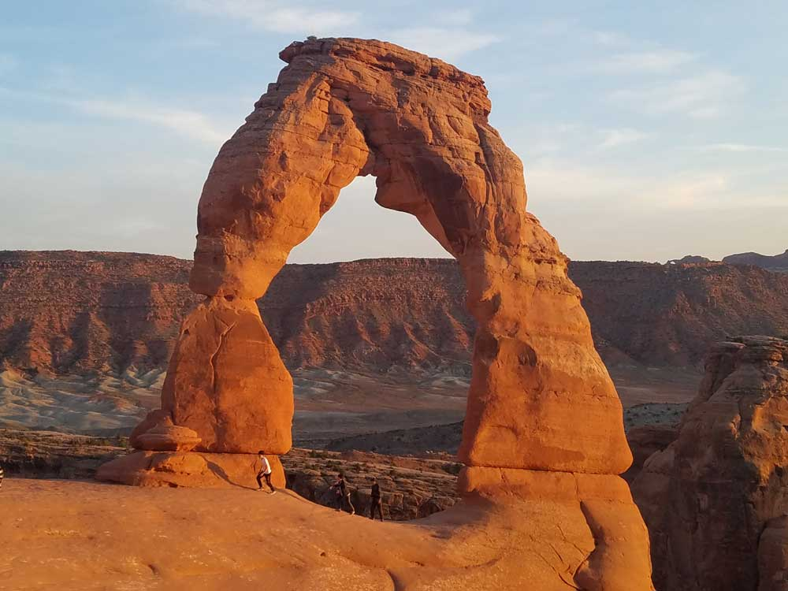
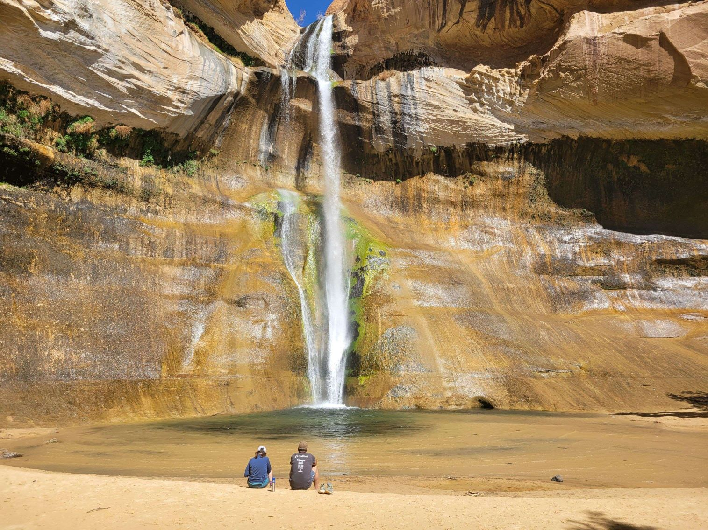
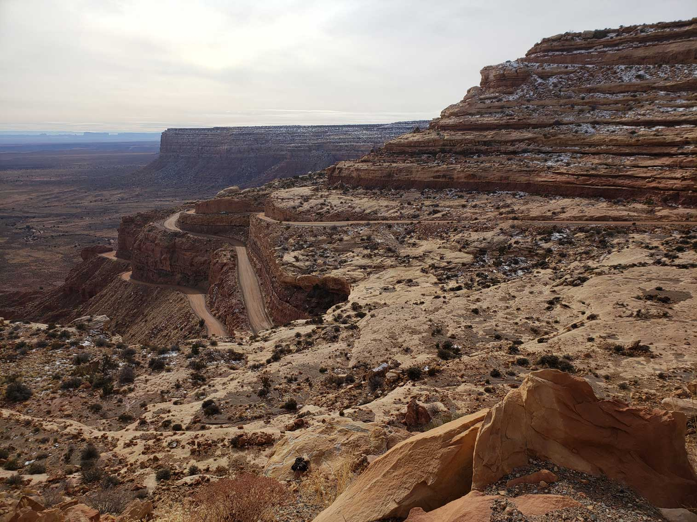
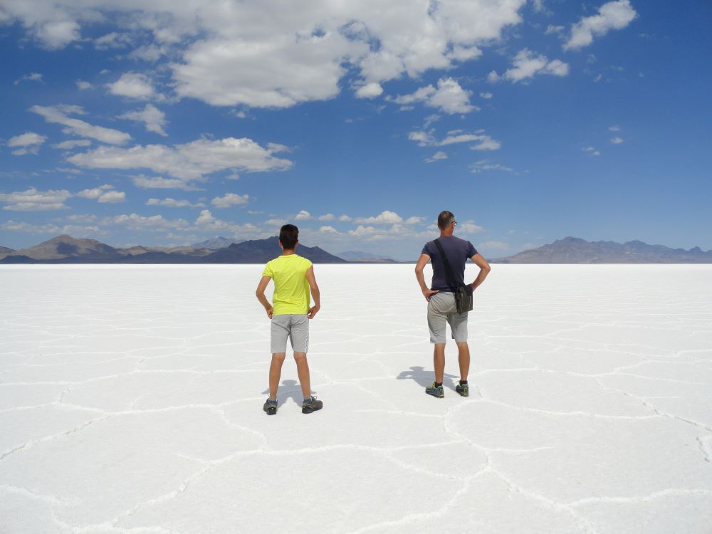
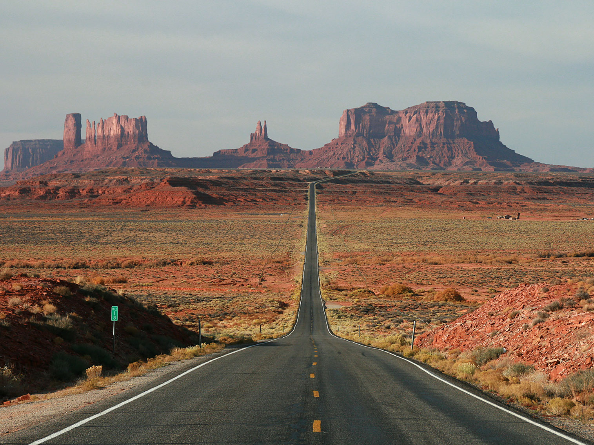
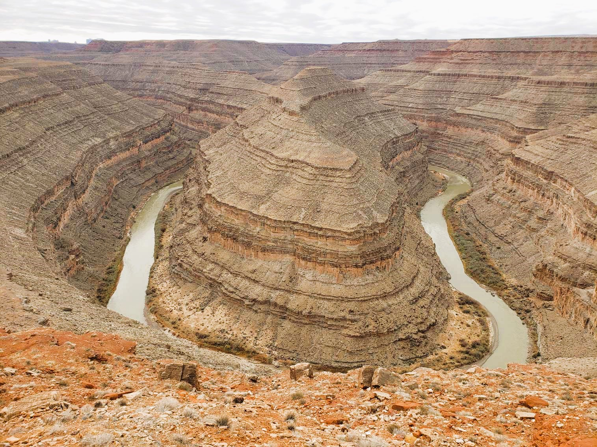
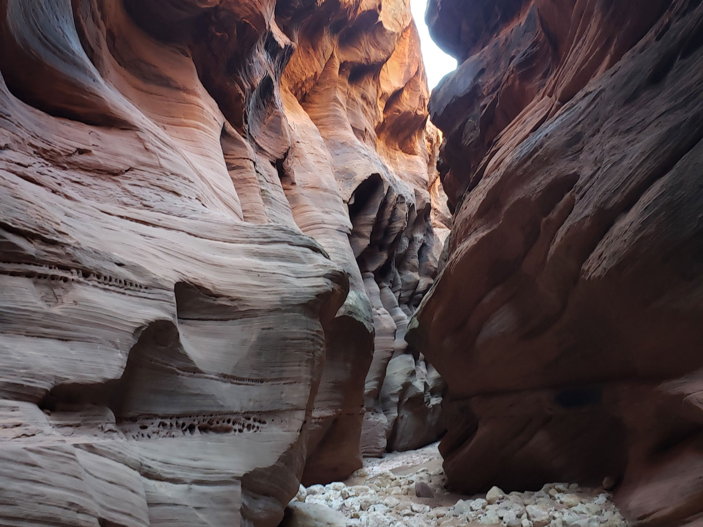

Utah Travel Guide
Explore five stunning national parks, ski world-class powder near Salt Lake City, and hike Utah's red rock canyons and towering desert arches.
Top Locations


Utah Map
Places to See in Utah

Delicate Arch, Arches National Park
National Parks

Moab★
Known for its dramatic scenery, Moab attracts many tourists annually, mostly visitors to the nearby Arches and Canyonlands national parks. The town is a popular base for hikers and mountain bikers who ride the extensive network of trails

Delicate Arch, Arches National Park
National Protected Areas: Southeast and South-Central Utah

Delicate Arch, Arches National Park
National Protected Areas: Southwest Utah

Delicate Arch, Arches National Park
National Protected Areas North Utah

Salt Lake City★
Capital and most populous city of Utah is the urban center of the state, featuring a blend of modern architecture, cultural institutions, and outdoor recreation opportunities framed by dramatic mountain scenery.

Salt Lake City, UT
Garrett from Salt Lake City, CC BY 2.0, via Wikimedia Commons; Image Size Adjusted

Cities

Bonneville Salt Flat
Fabio Achilli from Milano, Italy, CC BY 2.0, via Wikimedia Commons; Image Size Adjusted
.jpg){kind=link}
Landmarks and Landscapes: South Utah
Bonneville Salt Flat
Fabio Achilli from Milano, Italy, CC BY 2.0, via Wikimedia Commons; Image Size Adjusted
Landmarks and Landscapes: North Utah

Goosenecks State Park
Utah State Parks

Buckskin Gulch
Slot Canyons
A slot canyon is a narrow canyon that is formed from water rushing through rock. What starts off as a tiny crack steadily grows larger from repeat flash floods and erosion over millions of years. The end result is a narrow canyon with very high walls.
Overview
Utah is a Mountain West state of about 3.4 million people, with dramatic red rock country, the Wasatch Range, and a major role in Mormon history. Salt Lake City is the capital and largest city, and Utah became the 45th state on January 4, 1896. The name comes from the Ute people.
Visitors come for Utah's "Mighty 5" national parks, Arches, Bryce Canyon, Canyonlands, Capitol Reef, and Zion, and for scenic drives, slot canyons, and ski resorts such as Park City, Alta, and Snowbird. Others come for the Great Salt Lake, the Bonneville Salt Flats, and off-road adventures around Moab.
Geography
Utah has three regions: the Colorado Plateau in the south and east, with canyons, mesas, and arches, the Rocky Mountains, including the Wasatch and Uinta Ranges, in the north and center, and the Great Basin desert in the west. Kings Peak, at 13,534 feet (4,125 m), is the highest point. The Great Salt Lake is the largest saltwater lake in the Western Hemisphere, and the Colorado and Green Rivers carved canyons through the southeast.
History
The Fremont and Ancestral Puebloan peoples lived in Utah for centuries, and the Ute, Paiute, Shoshone, Goshute, and Navajo lived in the region when Spanish explorers passed through in 1776. Mormon pioneers led by Brigham Young reached the Salt Lake Valley on July 24, 1847, and Utah Territory was created in 1850. The transcontinental railroad was completed at Promontory Point in 1869, and mining, agriculture, and the Church of Jesus Christ of Latter-day Saints shaped the state. Utah became a state in 1896 and hosted the 2002 Winter Olympics.
Southern Utah and the Five National Parks
Southern Utah's red rock country holds the "Mighty 5" national parks, which are among the most visited in the country and can be linked in a single road trip. Zion has a deep canyon of sandstone cliffs, with hikes such as Angels Landing and The Narrows, and Bryce Canyon is filled with thousands of hoodoos, rock spires that glow orange at sunrise. Capitol Reef, a 100-mile wrinkle in the earth called the Waterpocket Fold, has orchards and petroglyphs. Arches, near Moab, has more than 2,000 natural stone arches, including Delicate Arch, and Canyonlands is a wilderness of canyons carved by the Colorado and Green Rivers, with the Island in the Sky, the Needles, and the Maze districts. Between them are Grand Staircase-Escalante and Bears Ears National Monuments, with remote slot canyons, Native American ruins, and scenic Highway 12, one of the best drives in the country. Spring and fall are the best seasons, summer is hot, and popular parks may require advance reservations.
The Moab Area
Moab, in southeastern Utah on the Colorado River, is the adventure capital of the Southwest and the base for both Arches National Park and Canyonlands National Park. The town started as a mining and ranching community, and its uranium boom of the 1950s was followed by tourism, and it is now famous for mountain biking on the Slickrock Trail and Whole Enchilada, four-wheel-drive routes, rafting the Colorado, canyoneering, and rock climbing. Dead Horse Point State Park has one of the most photographed overlooks in the West, 2,000 feet above a gooseneck of the Colorado River. The Fisher Towers, Corona and Bowtie Arches, the Potash Road dinosaur tracks and petroglyphs, and Scenic Byway 128 along the river are other highlights, and the Island in the Sky is the most accessible district of Canyonlands. Moab can be crowded in spring and fall, and summer temperatures often exceed 100 degrees, so winter and early spring offer quieter visits.
Great Salt Lake
The Great Salt Lake, in northern Utah, is the largest saltwater lake in the Western Hemisphere and the eighth largest terminal lake in the world, a remnant of ancient Lake Bonneville that covered much of the state in the Ice Age. The lake has no outlet, so minerals concentrate as water evaporates, making it three to five times saltier than the ocean, and swimmers float easily. Its size varies with rainfall and snowmelt, and low water in recent years has raised concerns about the lake's ecosystem and the dust from its exposed lake bed. Antelope Island State Park, reached by causeway, has beaches, a herd of bison, hiking trails, and sunsets, and visitors can see millions of migrating birds. Spiral Jetty, a huge earthwork sculpture on the north shore by artist Robert Smithson, and the Bonneville Salt Flats, where land speed records are set, lie to the west. The lake smells strongly in summer, and brine flies and shrimp are part of the ecosystem.
Salt Lake City
Salt Lake City, the capital and largest city of Utah, sits in a valley between the Wasatch Mountains and the Great Salt Lake, and is the base for the state's ski industry and outdoor recreation. The city was laid out by Brigham Young in 1847 on a grid with wide streets, and its center is Temple Square, with the Salt Lake Temple and the Tabernacle, home of the Mormon Tabernacle Choir. The Utah State Capitol, the City and County Building, and the Salt Lake City Public Library are architectural landmarks, and This Is the Place Heritage Park recreates a pioneer village. The 2002 Winter Olympics left a legacy of venues, and Gilgal Sculpture Garden is a quirky local landmark. Salt Lake City is a short drive from world-class skiing at Alta, Snowbird, Brighton, and Solitude, and has a growing food and craft-beer scene.
Mormon Colonization and Modern Influence
Utah was settled by members of The Church of Jesus Christ of Latter-day Saints, often called Mormons, who were fleeing religious persecution in the Midwest. Brigham Young led the first company of pioneers into the Salt Lake Valley on July 24, 1847, a date celebrated every year as Pioneer Day, and they established hundreds of farming towns across the Great Basin and the Colorado Plateau, from Cache Valley to St. George. The Mormon pioneer legacy can be seen at This Is the Place Heritage Park, the Pioneer Memorial Museum, and the St. George Utah Temple, the oldest operating temple of the church. Today a majority of Utahns are church members, and the church headquarters in Salt Lake City influences the state's culture, law, education, and business, including the many temples, the lack of widespread alcohol sales, a family-centered culture, and Brigham Young University in Provo. Church-run family history research in Salt Lake City draws genealogists from around the world, and Utah has one of the youngest populations in the country.
Skiing in Utah
Utah markets itself as having "The Greatest Snow on Earth," and its ski resorts routinely receive 300 to 500 inches of light, dry powder each season, thanks to the lake-effect storms off the Great Salt Lake. Resorts are only 30 to 45 minutes from the Salt Lake City airport, so visitors can fly in and be on the slopes the same day. In the Wasatch Mountains, Alta and Snowbird are legendary for steep terrain and deep snow, and Alta is one of the few resorts in the country that bans snowboarding. Park City, a former silver-mining town, has two large resorts, Park City Mountain and Deer Valley, as well as a lively Main Street. Brighton, Solitude, Snowbasin, Powder Mountain, and Beaver Mountain offer more terrain, and Sundance Mountain Resort, founded by Robert Redford, is a quieter alternative. Utah's resorts hosted events for the 2002 Winter Olympics, and the season runs from late November to April.
National Protected Areas
Utah has five national parks and many national monuments. Cedar Breaks, Natural Bridges, Rainbow Bridge, and Timpanogos Cave are National Park Service monuments, and Grand Staircase-Escalante and Bears Ears are large, remote monuments with canyons and Native American sites. Golden Spike National Historical Park marks the completion of the transcontinental railroad, and Glen Canyon National Recreation Area includes Lake Powell.
State Parks and Historic Sites
Utah's state parks include Dead Horse Point, with overlooks above the Colorado River, Goblin Valley, with its hoodoos, and Kodachrome Basin. Coral Pink Sand Dunes, Snow Canyon, and Sand Hollow are in the south, and Antelope Island in the Great Salt Lake has bison. Other landmarks include Spiral Jetty, Goosenecks, and Moki Dugway.
Seasons and When to Visit
Spring and fall are the best times for southern Utah's red rock parks, with mild temperatures, while summer is very hot and crowded. Winter brings the "Greatest Snow on Earth" and world-class skiing at Park City, Alta, and Snowbird, and cold, quiet days in the desert parks. Flash floods are a serious danger in slot canyons, especially from July to September, and reservations or timed entry may be required at popular parks such as Arches.
This article uses material from the Wikipedia article "Utah", which is released under the Creative Commons Attribution-Share-Alike License 3.0. Additional information was drawn from National Park Service, Utah State Parks, and Visit Utah.